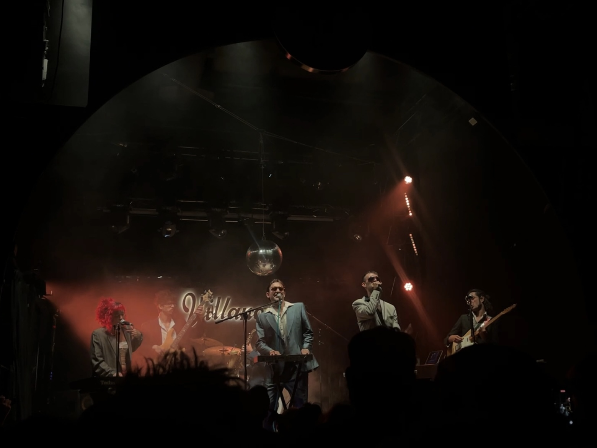
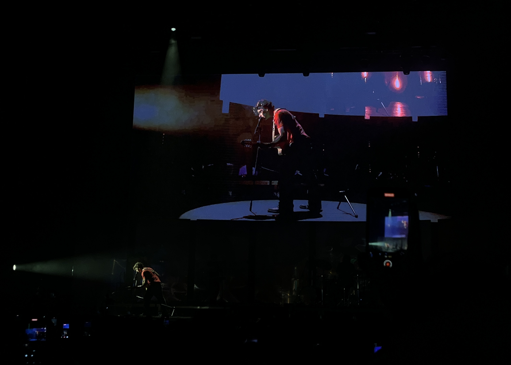
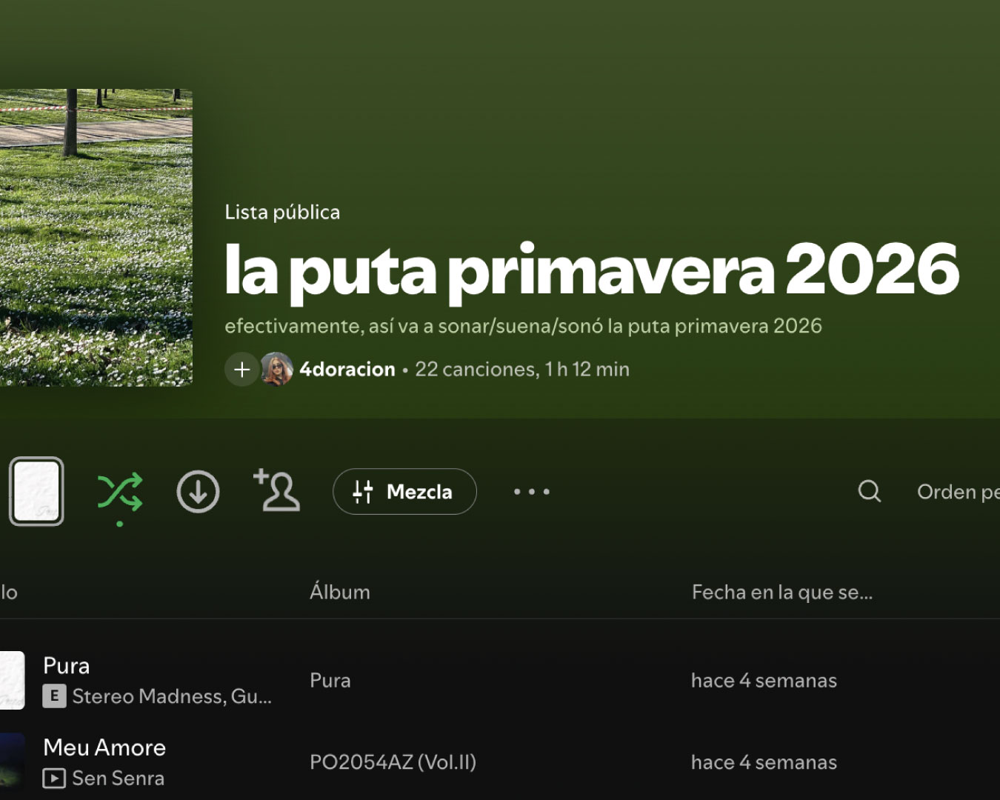

MÚSICA EN DIRECTO
MAYO 2026
EL OTRO DÍA ESTUVE EN UNO DE MIS CONCIERTOS FAVORITOS DE LO QUE LLEVAMOS DE 2025. STEREO MADNESS ES UN GRUPO DE DISCO COSMIC-FUNK
QUE MOLA MUUUUUUUUUCHO. EL CONTRASTE DE LA MÚSICA Y LAS LETRAS HACE QUE EL RANGO DE EDAD Y ESTILO DE PÚBLICO SEA MUY AMPLIO PERO A
LA VEZ ESTÉ MUY COMPROMETIDO SON LA MOVIDA, COSA QUE TE LO DA TODO EN UN CONCIERTO. EN RESUMEN: MÚSICA BIEN HECHA Y CON GANAS.
MIS FAVORITAS FUERON BOTINES BLANCO Y ÉCHALE MÁS. RECOMMENDED.

MÚSICA EN DIRECTO
MAYO 2026
LA SEMANA PASADA ESTUVE EN EL WARM UP EN MURCIA (BEST PLACE EVER) Y BUENO, TUVE MIXED FEELINGS. ME ENCANTARON LOS SHOWS DE GUITARRICADELAFUENTE Y DE CARLOS ARES. DE GUITARRICA
ME ENCANTÓ LA ILUMINACIÓN, LA REA, LA DIRECCIÓN MUSICAL, EL ACTING.. EN RESUMEN: TODO. DE CARLOS ARES LA DIRECCIÓN MUSICAL Y LA CONEXIÓN CON EL PÚBLICO. EN AKRILA ME LO PASÉ MUY BIEN,
PERO AL FINAL ERA UN SHOW DE PISTA Y MICRO CON 100 FILTROS, Y EL RESTO DE SHOWS PASARON SIN PENA NI GLORIA. NO ME SORPRENDE PORQUE YA SABÍA EL CARTEL PERO VAYA ES FUERTE COMO CADA
VEZ SIENTO QUE MÁS ARTISTAS QUIEREN PROYECTAR QUE TIENEN ALGO INTERESANTE QUE DECIR Y LUEGO NO SON CAPACES DE PRESENTAR NADA MINIMAMENTE COMPLEJO O DIFERENTE.

MÚSICA
MAYO 2026
MI PRECIADA PLAYLIST DE LA PRIMAVERA26. OBVIAMENTE SOY UNA LOCA DE LAS PLAYLISTS, Y PARA MI FUNCIONAN MÁS COMO CÁPSULAS DEL TIEMPO QUE COMO MOOD SETTERS. SEGUIDME EN SPOTIFY
@4doracion
PORQUE LA VERDAD QUE MOLAN :)